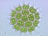
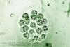
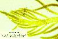
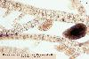
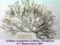

| Tipos
morfológicos de talofitas |
Características |
| Pseudoplasmodios
(intermedio entre protofitas y talofitas, en
algunos tratados de Botánica los consideran
protofitas) |
Amebas que se congregan
formando un falso plasmodio para formar un esporangio.
Unas células sirven de soporte y otras se dispersan
transformadas en esporas. Ej. Acrasiomicetos |
Cenobio* o consorcio
de agregación (también
intermedio entre protofitas y talofitas)
  |
En el
interior de cada célula se forma (por mitosis y
divisiones internas) un enjambre de zoosporas que se
unen entre sí (de forma postgénita) para formar una
especie de colonia que tendrá un número fijo y
constante de células, todas de la misma generación.
Ej.: Pediastrum,
Eudorina
(clorofita) |
Colonia celular (del
alemán Zellkolonie*)

|
Colonia
con forma definida y número de células constante. Las
más sencillas se forman de manera parecida a los
consorsios de agregación, pero hay un principio de diferenciación
de funciones: unas células son solamente
vegetativas y otras también pueden reproducirse. Ej. , Volvox
(clorofitas) |

Talo sifonal (o cenocítico) |
Talo formado por
un protoplasma ± continuo y plurinucleado (polienérgida)
que mantiene su forma mediante una pared celular común.
Hay talos sifonales pseudoparenquimáticos en los que los
filamentos se entrelazan formando ramas macizas - Ej. Codium
(clorofita)
|
Talo
filamentoso haplóstico
 |
Homotrico |
Talo formado por filamentos simples o con
ramificaciones equivalentes entre sí, sin partes bien
diferenciadas |
| Heterotrico |
Talo formado por filamentos rastreros de
los que nacen otros erectos y ramas
cortas laterales |
Talos filamentosos polísticos
(pseudoparenquimáticos)
 |
Cuando las células se
dividen en dos o tres planos se forman talos macizos o
huecos con varias o numerosas filas de células.
Otras veces los filamentos principales y sus ramas
laterales quedan unidos formando un falso tejido.
Diversas formas: cordón, tubo, lámina, arbolillo,
abanico, etc.
Ej.: numerosas especies de algas rojas (Rodofitas),
verdes (Clorofitas) y algunas algas pardas (Feofitas)
|
Parenquimático
(talos hísticos)
 |
Talo formado por uno o
varios tejidos
celulares que se forman a partir de una célula de
crecimiento o un meristemo,
mediante divisiones celulares en 2 ó 3 planos
diferentes. Ej. algas pardas más complejas (Fucales y
Laminariales)
|
* Nota explicativa.--
Algunos autores (p.e. Díaz González & al., 2004)
utilizan el término "cenobio" con un sentido muy
general para cualquier tipo de colonia laxa e
indiferenciada y reservan el término "colonia" para las
llamadas "colonias celulares".
En el diccionario de Font Quer se define "cenobio"
como "agrupación de células de origen común, pertenecientes
a la misma generación y reunidas en un conjunto de forma
determinada y constante para la especie. -- R.M." [Ramón
Margalef]. En tratados de otros autores se utiliza el
término "cenobio" (sensu stricto) en el mismo sentido
que Font Quer y Margalef. En otros tratados se usa el
término "consorcio de agregación".
El término Zellcolonie en su origen incluye
tanto los consorcios de agregación como las "colonias
celulares" porque en ambas formas el número de células es
fijo y constante. La traducción "colonia celular" parece una
perogrullada, pues todas las colonias están formadas por
células, pero aquí el término "celular" se refiere a
"integral", como el caso de los "teléfonos celulares" (que
no están hechos de células, claro), porque constituyen una
unidad indivisible. En algunos tratados de Botánica
hay cierta confusión en el uso de estos términos. En el
tratado de Izco, en la página 64 y siguientes se usa cenobio
como colonia en general y en la página 327 se usa una
definición más precisa como la de Font Quer. Se trata de
capítulos firmados por autores diferentes.
|